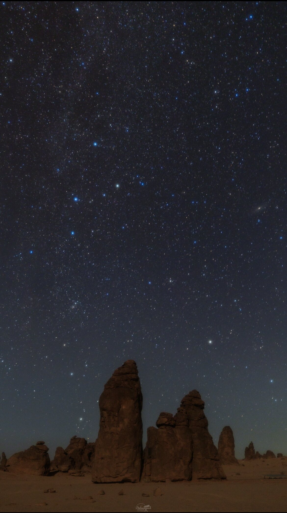
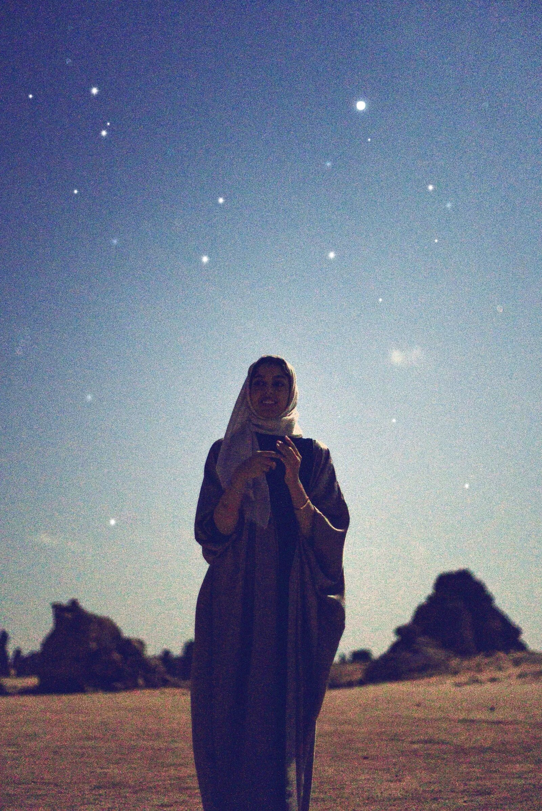

ii
The Beginning
The kickoff of the research was understanding that humans are really not that imaginative. In every phase of invention, our imagination and understanding of time and space relied on the tools that we used to measure them. In the era of the sundial, the time adopted the attributes of the sun, becoming encompassing, omnipresent, constant, dependable, untouchable. In the era of the water clock, time suddenly became tangible, able to be wasted, to be measured, to be gifted, to be saved. And so it continued, evolving as our materials and techniques did, until we come to our way of understanding time today – dictated, controlled, inaccessible, and unchallenged. A rigid, unquestioned facet of reality.
Every era’s timekeeping reflects the politics of its day. Ours is no exception. Our time is decided on in an office in France, sent to a few other offices around Europe, then to US military bases, before it arrives to our phones. The intangibility, as well as the intentional ambiguity of it, comes as no surprise. And naturally, neither do time’s carefully embedded politics.
In understanding the non-neutrality of these time telling tools, one begins to wonder; what does open-source time look like? What if telling time could be a direct process? If I could measure life, and communicate time, without it passing through all of those hands?
Taking a step back…
In 2020, I camped in the desert of Al Gharameel in AlUla, Saudi Arabia, which is 1,500 km, or two plane rides, from Kuwait City.
For the first time ever, I saw the night sky in all its glory. Far away from the lights of the city, I could see the different colors of the stars, the planets, the Milky Way...

by astrophotographer Muhammad AlObaidi
By some chance, I met a Bedouin poet/linguist, Majed Al-Zhofi, who shared some poetry about the sky, and pointed to the stars that were mentioned. I fell in love with the heaviness of his words, the dense history behind them, and felt there was something more there for me to learn. That one conversation is where this journey started.
Long story short, I ended up dropping everything, and stayed in that desert for three more months, learning the sky.
The stars, the moon, the planets... their rhythms and movements made sense to me. Three months wasn’t enough, and I decided to take a semester off my undergraduate studies in Kuwait University and learn time-telling and navigation through astronomy. Naked-eye, observational astronomy. Without any equipment, just as every civilization did for hundreds of thousands of years before time became a dictated concept. How did people read the sky?
Video by the British Broadcasting Corporation (BBC). 2023.
As the night sky became more familiar to me, a new environmental logic began to reveal itself. I learned more from the Bedouins living in that desert, many of whom spoke in a type of dense, heavy Arabic that I struggled to understand at first. They seemingly spoke in tongues, documenting sharp, scientific observation, gathered from 2000 years of observing the sky, into beautiful poetry and Arabic prose.
Slowly understanding the complexity of the language, and the precise scientific observation it offered, I realized that this environmental logic, the embodied, intuitive way of reading nature, was the same logic the people of the deserts, of the seas, of the mountains, of the arctic, of the plains, would live their lives by. This was how they would understand and communicate time and space. Through this logic and firsthand observation. This was how the first accurate maps were drawn, pre-satellites! This was how the calendars we use today were created! How the compass was halved and quartered!
It was all wonderfully advanced and complex, but at the same time, much more intuitive and harmonic than I ever could imagine with my iPhone brain or my Google Maps brain. And now, my ChatGPT brain.
Here is a journal entry from that time:
“I’m so content.
I’m in Al Gharameel desert. This spot, these stars, feel like home. I’m on my back with my arms in the air and I’m tracing the constellations that will lead me back to civilization. I’ve learned to use my body. My fingers measure the degrees between the stars and my arms can gauge the rotation of the sky.
After a while with my hands up, the roles reverse.
It feels like I’ve been orchestrating the harmonious orbits above me rather than measuring them.
I’m breathing in the culture. Language, environment, sky, land, peace, need, shelter, direction, awareness. These are ideas discussed from the distance of continents and centuries. But here, everyday I speak to a woman and her grandson who recognize me by the sound of my feet on the sand. I sit with the old Bedouin men who don’t mind how I’m young, female, and foreign. They laugh at my accent and the simpleness of my Arabic. Yet, they teach me how everything came to be. They surprise me. With every line of poetry, they have the quantitative data to back it up. It all connects. I’m experiencing a new kind of clarity – one that surfaced from a calculated complexity unique only to nature. I’ve observed and studied patterns and paths, points and lines, far away from their usual digital context.
This is where it all came from, after all. Looking up at the sky’s ambiguity allowed our minds to wander into the study of time, math, philosophy, religions, and all of what makes us feel human, like vulnerability, reassurance, and wonder…
I’m really feeling it. Just looking up is giving me more insight than I could have gained in lifetimes. I wish I could stay here forever.”
More entries from that time are in the Field Notes.
When I finally returned back to the city, the time and space I had known my entire life – the clock, navigation, calendars, all did not make sense to me any longer. I felt as though I had broken through it, and I could no longer step back into my old understanding.
I outgrew it.
But in trying to continue on my research, I realized how impossible it was to simply research this environmental logic from Western sources. To find traces of it in what we know as time today. Outside of the desert, when I couldn’t see the sky, I struggled to piece it together. The temporal and spatial frameworks all my research was based on were no longer reliable to me. It all fell apart.
And with the lights of the city, when I could no longer see the night sky, I felt lost. I couldn’t look up to know where I was going, or how much time had passed.
So I went back.
I volunteered to teach what I had learned. I wanted to spread the knowledge, but also, through teaching, I knew I could learn so much more. A hiking company interested in cultural tourism gave me the space to design my own program. I began taking people on a two-hour road trip into the desert, seating them on the ground beneath the stars, and guiding them through a lecture on how to use the sky as a compass, a map, a clock, and a calendar; through stories, poetic fragments, and historical observations I had gathered during my journeys in that very same desert.
It was the most magical thing. The sky was my theater. I moved from one end of the stage to the other, using my hands, my voice, urging people to look up, then behind them, then east, then west. Everyone trusted me to guide them through the desert. I made friends from all over.

The night sky stepped back into a role it had briefly abandoned: connecting the entire world through one simple, shared gesture: to look up.
I did this for about 10 months, taking 40+ students out every night (except when it was cloudy/rainy), and teaching people this became not only a passion, but an urgent life mission that I could no longer abandon.
I knew the first step to creating my own world of knowledge was dismantling, critiquing, analyzing the knowledge systems we consider as unquestionable truths. Especially those that define our sense of time and space.
I had a lot of work to do.